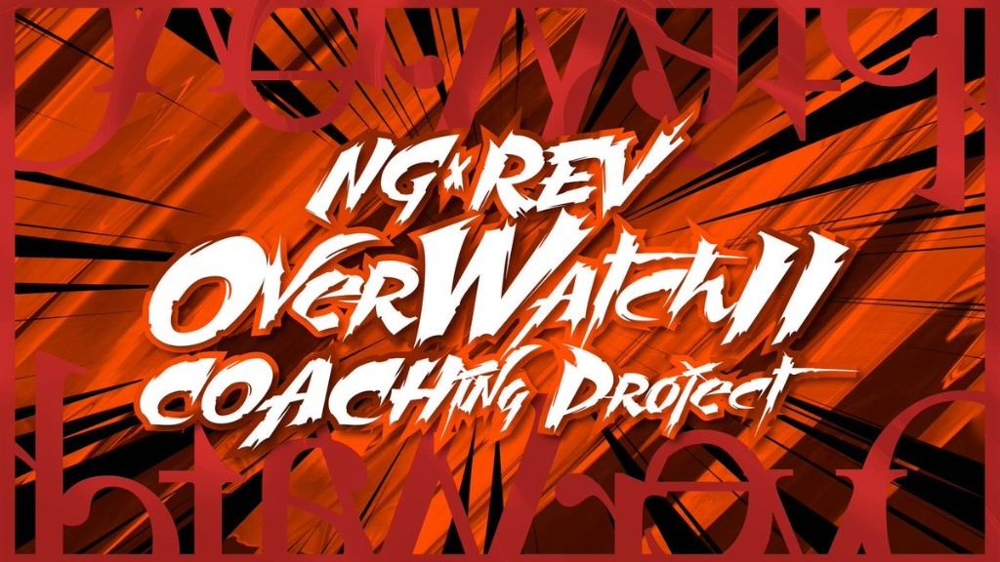

【NG×REV】OW2 Coaching
Coaching Service01. 概要
@NG_NyamGaming と @Revati_jp が共同運営するOverwatch2のコーチングサービス。幅広いランク帯のプレイヤーに向けて、実践的な技術指導とメンタル面のサポートを提供しました。（※現在は新規受付終了）
02. 背景と課題
Overwatch2はチームプレイと高度な状況判断が求められるタイトルであり、個人の力だけではランクアップの壁にぶつかるプレイヤーが数多く存在していました。その壁を突破するための言語化された知識が必要とされていました。
03. 解決策と成果
単なるエイム指導ではなく、立ち回りやマインドセットの改善、チームとしての動き方を論理的にコーチング。受講生が自身のプレイスタイルを客観視し、継続的に成長できる土台を作り上げました。